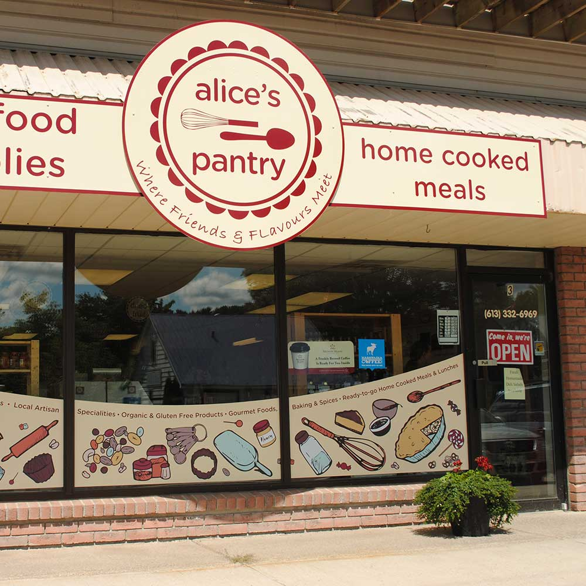

<div class="grid">
    <div class="info unit unit-xs-1 unit-s-1 unit-m-1 unit-l-1">
      <h2>alice’s pantry window decal, 2016</h2>
      <p>This piece was created for a local pantry in Bancroft, Ontario to showcase and advertise some of their goods.
        The style and colour palette chosen for the illustrations reflect the friendly and upbeat atitude of the store and it’s staff.
        Done as a contractor with TrueCourse Communications.</p>
    </div>
        
  </div>
